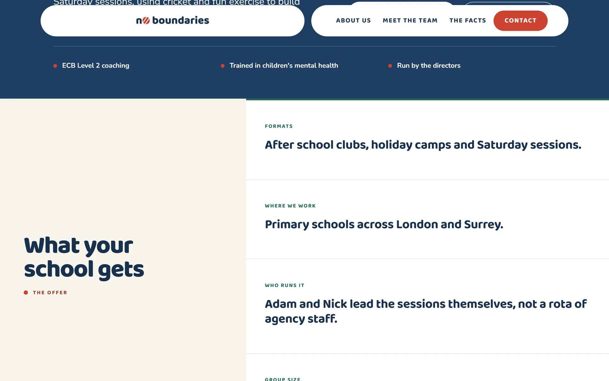
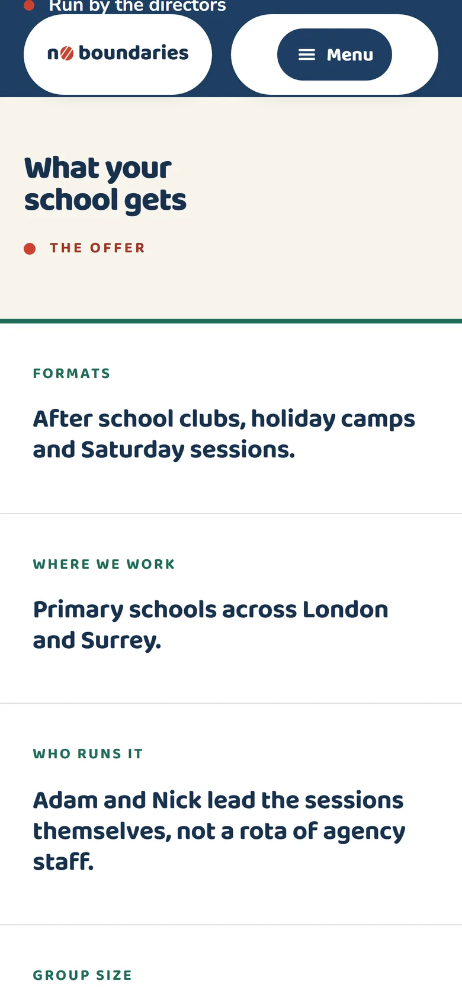

Case
No Boundaries
Balancing children’s wellbeing through cricket and exercise, for primary schools across London and Surrey.
Project
No Boundaries
Design & Build
6 weeks
Web Design
Preview

Overview
The brief
“Cricket is the way in. Wellbeing is the point.” No Boundaries is a wellbeing programme for primary schools that uses cricket, not a cricket academy that happens to be nice to kids. The site is written for one reader: a head teacher vetting a provider, who needs the coaches, the credentials and the safeguarding case answered before they scroll past the fold.
The programme is founded and coached in person by Adam London (a former professional cricketer who played five years for Middlesex CCC and appeared in the 2009 Ashes) alongside fitness coach Nick Hampshire, running afterschool clubs, holiday camps and Saturday sessions across London and Surrey. This build is a ground-up rebuild of an earlier Bootstrap site: a hand-written design system built around the ACTIVE ethos the sessions themselves teach, with every colour pairing on the page checked and recorded against a contrast ratio.
The challenge
What was in the way
The old Bootstrap site was friendly. It was not built to survive a vetting call:
- Nothing on the page read like a rigorous provider, the thing a head teacher checks for first.
- Safeguarding, insurance and DBS checks had no dedicated place on the page at all.
- Two real, named coaches were getting lost behind generic “our team” language.
The approach
How we got there
-
A palette with the receipts
Seven brand colours, every pairing contrast-checked and recorded against AA. Navy and pitch share the same saturation so they read as a coordinated pair; ball red stays the one accent that never competes with itself.
-
The nav is a wicket
Two floating capsules of equal width, inset from the edges with a gap between them where the middle stump would be. The cricket reference lives in the layout, never drawn.
-
Answer the vetting checklist
A dedicated block addresses exactly what a head teacher checks first (safeguarding training, DBS, insurance, first aid), stated in plain text, never hidden behind a hover.
-
Two coaches, not a franchise
Adam and Nick are named, credentialed and pictured on every page that matters, because “our team” doesn’t pass a credibility check.
On screen
The site, up close
Navy, pitch green and one red accent, set in a hand-written flexbox layout with no grid framework. Real session photography carries every page, and nothing meaningful hides behind a hover.
Full page

Desktop


Pillars

Mobile



The outcome
What it delivered
The rebuild gives No Boundaries a site built for the one reader who matters most: a head teacher deciding whether to trust a stranger with their pupils.
Results
30+
+85%
AA
In their words
Teachers tell us the website was what convinced them. It feels like the sessions do.
Programme Lead
Status
Next
Get in touch